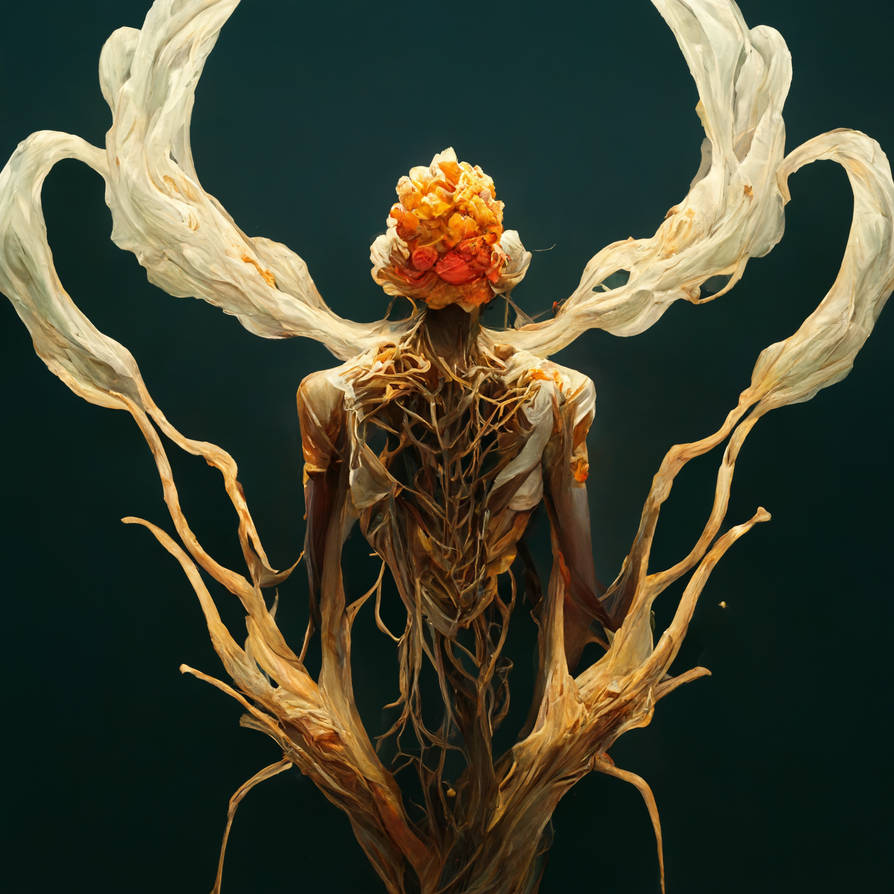

In the vast expanse of the cosmos, the Mimicry Parasite emerged as a unique entity, drifting through space in search of a suitable host. Its origins trace back to a distant, dying planet where it evolved the remarkable ability to mimic the biological signatures of other organisms, enabling it to blend seamlessly with various life forms. As it wandered through the universe, this parasite encountered numerous celestial bodies, but none offered the rich, diverse ecosystems that Earth would eventually provide.
Upon Earth's formation, the Mimicry Parasite faced the challenge of penetrating the planet's nascent atmosphere. Utilizing its adaptive mimicry, it disguised itself as microscopic spores, hitching a ride on the solar winds that bombarded the early Earth. This strategy allowed it to bypass the planet's atmospheric defenses and establish a foothold in the primordial oceans, teeming with life. Once submerged, the parasite began its search for hosts, integrating itself into the delicate balance of marine ecosystems.
As Earth's environments evolved, giving rise to lush forests and complex terrestrial ecosystems, the Mimicry Parasite adapted accordingly. It developed the ability to mimic a wide array of organisms, from simple bacteria to complex plant life, allowing it to infiltrate diverse habitats. Through the millennia, the parasite's interactions with Earth's flora and fauna led to a co-evolutionary dance; hosts developed defenses, and the parasite, in turn, refined its mimicry. This continuous adaptation ensured its survival and proliferation across the globe.
In the present day, the Mimicry Parasite remains a master of disguise, seamlessly integrating into modern ecosystems. Its long history on Earth has forged a complex relationship with its hosts, balancing parasitism with symbiosis. While it continues to exploit host organisms for survival, it has also become an integral part of Earth's biodiversity, influencing and being influenced by the planet's intricate web of life.
